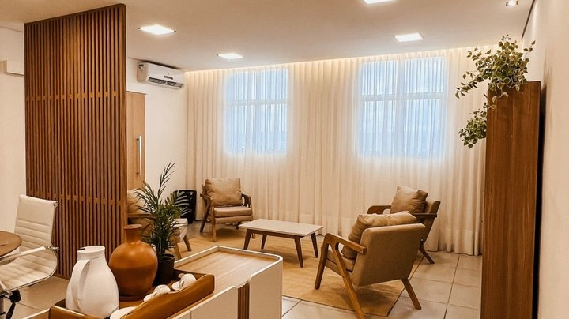

(1).webp)
 (1).webp)
Na Union Neil, elevamos o cuidado domiciliar à forma de arte, focando em soluções que atendem às necessidades únicas de cada paciente, e da sua família, diretamente no conforto do seu lar.
Reconhecemos que cuidar de um ente querido exige de atenção ao detalhe, capacidade de resposta rápida, competência técnica, e de compromisso férreo com a nossa missão de providenciar uma vida digna e ordenada.
Por isso, oferecemos um sistema de apoio completo para abordar todos os aspectos da vida doméstica. Cada equipe de profissionais, cada rotina de cuidados, são criados por Gestoras com mais de 20 anos de experiência, sob uma cuidadosa e criteriosa compreensão das necessidades da pessoa cuidada e de sua família.
Sob a supervisão diária e minuciosa de nossa equipe de Enfermeiras Gestoras, garantimos a qualidade e a eficácia dos cuidados, transformando sua casa em um santuário onde as famílias podem voltar a se concentrar no que realmente importa.
Seleção e designação cuidadosa de profissionais para atender às especificidades de cada lar.

Visitas detalhadas e atentas da Enfermeira Chefe para um acompanhamento minucioso.

Orientação diária para garantir um padrão de cuidado excepcional na casa do paciente.

Comunique-se diretamente com as nossas Enfermeiras Chefe a qualquer momento.

Gerenciamos seus compromissos médicos, com eficiência e cuidado.
 (1).webp)
Administração precisa do estoque dos medicamentos do paciente, para sua tranquilidade.

Preparo de refeições, higienização das roupas do paciente, e serviços de faxina para seu conforto.

Realçe o bem-estar do paciente com serviços estéticos exclusivos no conforto do seu lar.

Cremos que a melhor testemunha dos nossos serviços vem daqueles de quem cuidamos. Assista esse curto vídeo para ouvir como os nossos pacientes descrevem à Union.

Compartilhamos aqui, com enorme alegria e satisfação, as palavras das famílias as quais servimos
Extremamente excelente, uma equipe que trabalha com amor e carinho, foram 03 meses que cuidaram de um ente querido e sempre deram o melhor, recomendo a todos que necessitam de cuidador de idosos ou pessoas que necessitem de cuidados especiais, a equipe é monitorada por médicas competentes. Você recebe diariamente um resumo dos medicamentos, cuidados e estado de saúde do paciente.
Empresa com profissionais qualificados, carinhosos e muito atenciosos em todas situações.
Meu nome é Arlete, tenho 64 anos. Meu contato com a UNIONNEIL começou em maio/23, após uma queda sofrida por meu pai Sr. Bonifácio, de 97 anos, que causou fratura de fêmur. Desde então ele tem sido cuidado por profissionais dessa empresa que se mostrou extremamente comprometida com o bem estar do paciente e de seus familiares. A equipe de enfermagem é altamente preparada e competente. Diante disso, só tenho a fazer ótimas recomendações da empresa UNIONNEIL.
Foi muito bom, as profissionais da enfermagem são muito eficientes, gostamos muito, fizeram ótimos trabalhos com muito carinho, amor e dedicação.
Meu nome é Bruno, e sou neto do Odair, paciente da Union Neil. O Odair perdeu a força nas pernas e ficou difícil para eu cuidar dele sozinho, entramos em contato com a Union Neil por uma indicação. Desde o primeiro momento, me senti ouvido e compreendido e os cuidados para com o Odair tem sido sempre feitos com extrema atenção, dedicação e profissionalismo. Sempre senti que ele estava em boas mãos. Hoje, o Odair está muito melhor, sei que o papel da Union Neil foi fundamental, ajudou a mim e minha família, com muito carinho, hoje, eu também posso indicar a Union Neil para todos aqueles que estiverem precisando de cuidados domiciliares. Obrigado Union Neil de coração.
Uma empresa extremamente comprometida em cuidar da saúde e garantir o bem estar dos pacientes e seus familiares. Os funcionários se caracterizam pelo imenso respeito, dedicação e cuidado para com os pacientes. Recomendo sem dúvidas a todas as famílias que estejam precisando de cuidados para um ente querido em casa.
Realmente cuidam dos pacientes como se fossem da própria família, com muito carinho e respeito. Os profissionais são dedicados e atenciosos, sempre pensando no bem-estar dos pacientes e da família. Se você tem alguém que precisa de cuidados especiais em casa, pode confiar de olhos fechados. Recomendo muito!

 (1).webp)
Na Union, ultrapassamos a mera prestação de serviços para tecer uma teia de suporte que envolve cada aspecto da vida doméstica, assegurando a paz e a ordem.
Mergulhamos profundamente nas particularidades de cada lar, compreendendo a essência de suas necessidades para conectar você aos profissionais mais adequados.
A supervisão constante de nossa equipe é um pilar central da nossa metodología. A figura da Enfermeira Chefe, sempre acessível e atenta, é a garantia de que a qualidade e a eficácia dos cuidados estão sempre sob observação rigorosa. Elas são os olhos da família dentro de casa, assegurando que a execução dos cuidados seja impecável e que a paz e o bem-estar reinem, permitindo que você se dedique aos momentos que verdadeiramente importam.
Adoramos ouvir sua história e estamos prontos para dialogar, seja por uma chamada rápida ou uma conversa no WhatsApp.
Vamos conhecer sua situação detalhadamente e orientá-lo sobre os próximos passos com todo o respeito e atenção que você merece.
A escolha pela Union Neil traz vantagens cruciais, focando-se principalmente em dar para os familiares a tranquilidade de poder viver sua vida sabeminimização de riscos:
O perfil típico dos nossos pacientes em Home Care abrange indivíduos que preferem receber cuidados no conforto e na familiaridade de suas próprias casas. Esses pacientes geralmente buscam assistência domiciliar para gerir condições crônicas, recuperar-se de procedimentos cirúrgicos, ou receber cuidados paliativos de forma digna e confortável.
Nossos serviços são especialmente valiosos para idosos que desejam manter sua independência e continuar vivendo em seu ambiente familiar, pessoas em processo de reabilitação física após eventos médicos significativos e pacientes com necessidades contínuas de saúde que requerem atenção domiciliar regular, mas não necessitam dos recursos intensivos de uma internação hospitalar.
A Union Neil atualmente atende as cidades de Sorocaba, Votorantim e Salto de Pirapora. Estamos comprometidos em oferecer assistência de alta qualidade em ambas as regiões, garantindo que nossos pacientes recebam os cuidados necessários com a eficiência e a dedicação que nos caracterizam.
Se você tem interesse em que a Union Neil estabeleça um polo em outra cidade, por favor, entre em contato conosco pelo telefone (15) 98 111 3016. Estamos sempre avaliando oportunidades para expandir nossos serviços e atender mais comunidades.
Não, a Union Neil não oferece atendimentos avulsos. Nossos pacientes devem necessitar de um mínimo de pelo menos 1 mês de Home Care para serem elegíveis. Isso se deve ao modo detalhado, cuidadoso e extremamente personalizado com que as equipes são montadas, implantadas, organizadas, supervisionadas e orientadas.
Nosso modelo de atendimento é projetado para o sucesso a longo prazo.
Sim, é necessário assinar um contrato ao iniciar os serviços com a Union Neil. Este contrato é cuidadosamente elaborado para garantir transparência total entre todas as partes envolvidas, definindo claramente os termos, as responsabilidades e as expectativas.
Entendemos, no entanto, a importância da flexibilidade. Por isso, não prendemos nossos clientes a termos restritivos. Se por qualquer motivo você decidir que o serviço não atende às suas expectativas, é possível rescindir o contrato com um aviso prévio de 7 dias. Para contratos iniciados há menos de 10 dias, o período de aviso é reduzido para apenas 3 dias. Não é necessário fornecer justificativa para a rescisão, permitindo que você faça escolhas que melhor atendam às suas necessidades sem complicações adicionais.
Os gestores da Union Neil possuem mais de duas décadas de experiência prática em Enfermagem, tendo trabalhado em posições de responsabilidade para os mais prestigiados convênios médicos do Brasil, tanto em ambientes hospitalares quanto em Home Care.
Na dimensão empresarial, nossos gestores também se destacam por suas experiências internacionais, tendo atuado em projetos de grande escala que envolvem a gestão de negócios em diferentes países. Essa exposição internacional aporta uma visão global e práticas avançadas ao gerenciamento dos nossos serviços de Home Care, permitindo uma implementação ágil e eficiente de soluções inovadoras que atendem às necessidades complexas de nossos clientes.
Além disso, nossos gestores têm experiência docente em importantes centros de formação técnica de enfermagem, contribuindo significativamente para a educação e capacitação de novos profissionais na área.
Essa rica experiência garante que nossa equipe aplique as melhores práticas e inovações no campo da saúde domiciliar, sempre com um alto padrão de qualidade e eficiência.
Se você tem uma pergunta que não foi respondida nesta seção, ficaremos felizes em ajudá-lo. Você pode entrar em contato conosco clicando no botão do WhatsApp abaixo, e nossa equipe retornará o mais rápido possível. Nosso tempo de resposta é geralmente de apenas alguns minutos.

Agende uma visita conosco para conversarmos pessoalmente e juntos descobrirmos a melhor solução, acompanhados de um delicioso café mineiro.
Estaremos encantados em recebê-los!